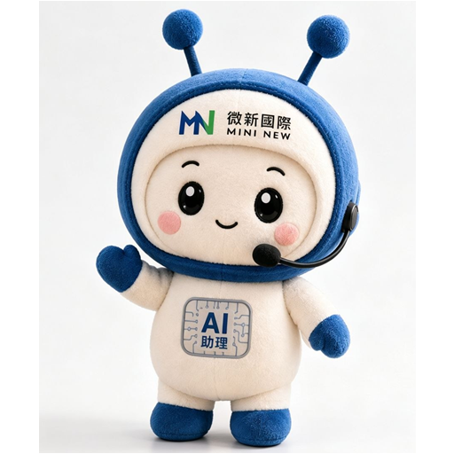

所有尚未完成集中處理
讀取中正在讀取目前工作資料。
按「完成」會把項目移到歷史紀錄。
按「刪除」會從這支手機的首頁隱藏，不會影響報名或股票資料。
重點先看，細節再展開；成品與進度集中在這裡。

#ims 做保健大樹高級版#ppt 做成長輩看得清楚的課程簡報#voice 我想用語音說需求，請告訴我怎麼傳#video 剪成熱情活潑、有字幕、有微新 Logo 的短影音
新補的官方技能重啟 Codex 後會完整載入；個人專用技能不覆蓋，避免影響既有工作流。
會結合我對你的了解，也會刻意丟出跨領域、跨思維、甚至你平常不會想到的題目，拿來聊天、發文、短影音或新專案發想。
例如新產品、話術、短影音、網站功能、AI 助理新玩法。